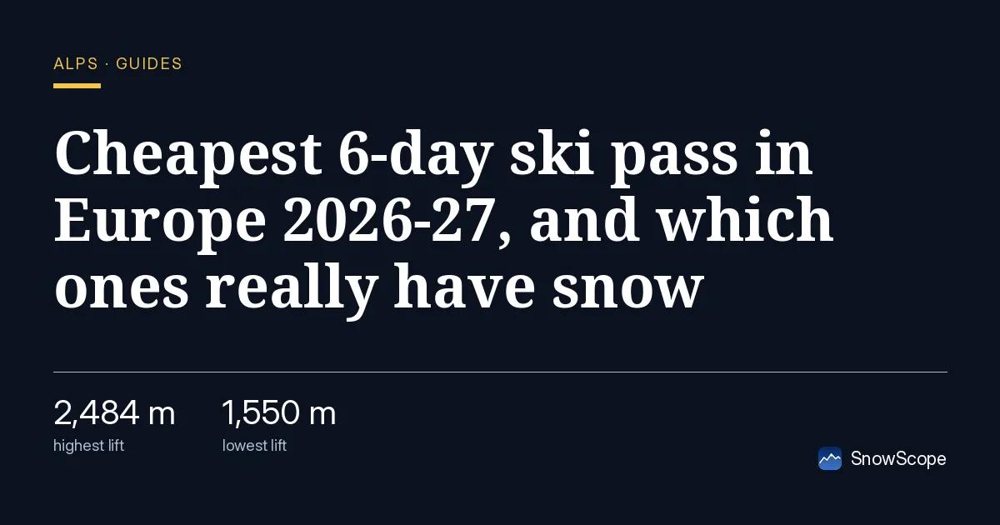

Cheapest 6-day ski pass in Europe 2026-27, and which ones really have snow
The cheapest ski week in Europe this winter is not in Slovenia, even if Slovenia has some of the lowest prices. Les Karellis in the French Alps sells an adult 6-day pass for 191 EUR and, in our snow history of 46 past winters, it has 19 weeks a winter with at least 50 cm of snow in 9 winters out of 10. The cheap Slovenian passes have none.
See the live snow forecast for Les Karellis in the SnowScope appSnow depth, powder alerts and the 3D map, free.
The ten cheapest 6-day passes we checked
We took the adult 6-day prices that the resorts publish for winter 2026-27 and sorted them. Les Karellis comes first at 191 EUR, then Krvavec at 205 EUR, Rogla from 210 EUR (up to 237 EUR on busier dates), the Pass Horizon at Orcières Merlette at 227 EUR, which also opens the pool and the ice rink, and Vogel at 230 EUR.
The second group sits close together: Galtür at 258 EUR in its low season, Livigno at 258.5 EUR during its promotion from 28 November to 18 December 2026, Les 2 Alpes at 266.5 EUR, Kühtai at 269 EUR in low season and Valloire-Valmeinier at 278.5 EUR. The gap between the first and the tenth is smaller than most people expect, so the snow should decide.
Price is half the story: the snow check
A cheap pass is only cheap if there is snow to ski. For each resort we looked at mid-mountain in our snow history and counted the weeks of a normal winter that have at least 50 cm of snow in 9 winters out of 10. We call them snow-sure weeks. Fifty centimetres is roughly what you need for most runs to open without rocks.
Les Karellis has 19 snow-sure weeks at 2017 m. Les 2 Alpes has 20 at 2397 m, Valloire-Valmeinier 19, Galtür and Kühtai 18 each, Orcières Merlette 16 and Livigno 13. Krvavec, Rogla and Vogel have 0: their mid-mountain sits between 1151 m and 1718 m and in a usual December it holds 6 to 10 cm of natural snow. They can still be fun with snowmaking, but you are betting on the weather.
Our verdict for a budget ski week
For a cheap week with a solid chance of good snow, Les Karellis is the clear winner: lowest price and 65 cm of snow in a usual December at mid-mountain, 110 cm in January. It is a small area with 45 km of runs, so it suits families and intermediate skiers more than people who want a new valley every day.
If you want more terrain for a little more money, Les 2 Alpes gives you 108 km of runs and the highest lifts of the list, up to 3511 m, for 266.5 EUR. Kühtai is the Austrian pick: its lifts start at 1939 m, so even the bottom usually has 61 cm in December. Galtür is the quiet alternative in the Paznaun valley.
When to go to pay the low price
Several of these prices are low-season rates. Galtür and Kühtai charge more in high season, and Livigno's 258.5 EUR only runs until 18 December 2026. The week of 12 to 19 December is the sweet spot: the low prices still apply and the resorts above 2000 m usually have their base built.
In January the snow is deeper almost everywhere on the list. If your dates are flexible, a January week outside school holidays gives the best mix of price and snow, but check which rate applies on your dates before you book.
Where to sleep for less
The pass is only part of the bill. Small resorts like Les Karellis and Orcières Merlette have many apartments close to the lifts, which keeps the week cheap for a family. In Galtür and Kühtai, guesthouses are often cheaper than hotels. The map in this article shows stays under 120 EUR a night for the week of 12 to 19 December, near the resorts we recommend.
Always check the resort's own website before you buy: prices can change during the winter and the cheapest rates are often online only.
Tips for skiers
- Best value for a ski week: Les Karellis, 191 EUR for 6 days and 19 snow-sure weeks.
- More terrain: Les 2 Alpes, 266.5 EUR for 6 days and lifts up to 3511 m.
- Slovenian passes are cheap but low: plan them only after a good snowfall.
- Buy on the resort's official site and check the avalanche bulletin before going off-piste.
More maps (external sites)
References and credits
- Les Karellis, official prices 2026-2027 www.leskarellis.com/fr/tarifs-2026-2027-sans-lien
- Krvavec: official lift-pass prices (2026-27), checked 13 November 2026 rtc-krvavec.si/cenik-urnik
- Rogla: official lift-pass prices (2026-27), checked 13 November 2026 www.rogla.eu/sl/aktualna-ponudba/ceniki/zimske-aktivnosti/cenik-smucarskih-vozovnic-v-sezoni-20262027/
- Orcières, official ticketing, winter 2026-27 pass.orcieres.com/en/ticketing
- Vogel: official lift-pass prices (2026-27), checked 13 November 2026 vogel.si/cenik-zima/
- Galtür: official lift-pass prices (2026-27), checked 13 November 2026 www.galtuer.com/en/winter/operating-times-prices/skipass-prices-silvapark
- Livigno, official ski pass price list 2026-27 (PDF) www.livigno.eu/hubfs/tariffe_26-27.pdf
- Les 2 Alpes, official ski pass shop, prices 2026-27 www.skipass-2alpes.com/en/pricing
- Kühtai: official lift-pass prices (2026-27), checked 13 November 2026 www.kuehtai.info/service/service/preise-wintersaison-2026-2027.html
- Valloire, official ski pass shop (Galibier-Thabor), winter 2026-27 skipass.valloire.com/fr/
About these numbers
Snow numbers: SnowScope snow history, 46 past winters (1980-81 to 2025-26) at three heights of the resort, a model of the past corrected for height (an estimate for an area, not resort reports). Lift, run and access facts: the sources listed below, checked on the date shown.
Cite this report
For research, teaching or the press: the numbers and charts are free to reuse under CC BY 4.0 with this citation.
SnowScope (2026), Cheapest 6-day ski pass in Europe 2026-27, and which ones really have snow, https://snowscope.app/blog/en/2026/11/cheapest-6-day-ski-pass-europe-2026-27-snow-check.html, accessed 2026-11-19
SnowScope (Atlas Labs). (2026, November 19). Cheapest 6-day ski pass in Europe 2026-27, and which ones really have snow. SnowScope snow reports. https://snowscope.app/blog/en/2026/11/cheapest-6-day-ski-pass-europe-2026-27-snow-check.html
BibTeX
@misc{snowscope2026cheapest6dayskipasseurop,
author = {{SnowScope (Atlas Labs)}},
title = {Cheapest 6-day ski pass in Europe 2026-27, and which ones really have snow},
year = {2026},
month = nov,
howpublished = {\url{https://snowscope.app/blog/en/2026/11/cheapest-6-day-ski-pass-europe-2026-27-snow-check.html}},
note = {Published 2026-11-19 13:06 UTC; accessed 2026-11-19}
}· CC BY 4.0 · Methods, data and tools →
Les Karellis: snow and temperature by height, this winter vs last (tools) →
Follow Les Karellis
Free: a message when fresh snow is coming, and the forecast every morning.
More snow reports

Les Karellis offers 45 km of runs and a 6-day adult pass for 191.00 EUR with a 98 % chance of snow mid-mountain in late December.

We rank French ski resorts by December snow odds and checked pass prices, starting from 36.00 EUR for an adult day pass in Les Karellis.

From 20 EUR on an opening weekend to 6-day passes before Christmas: a calendar of the cheapest early-season ski deals in the Alps for 2026, with the snow you can expect.